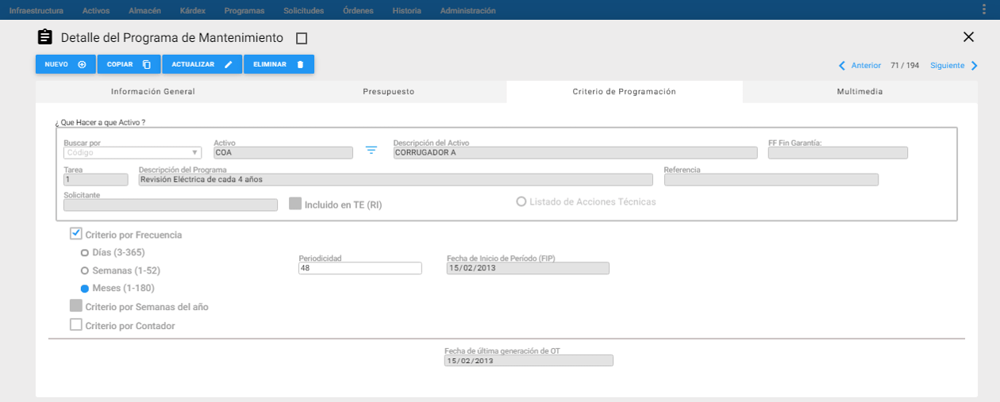
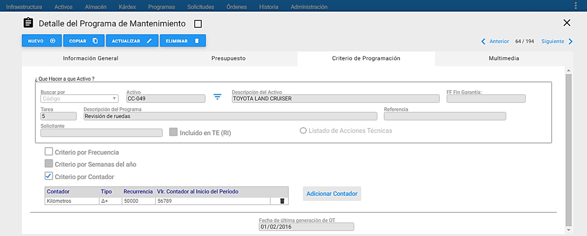
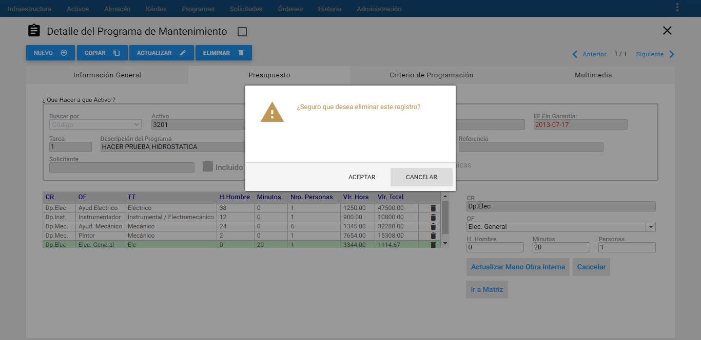
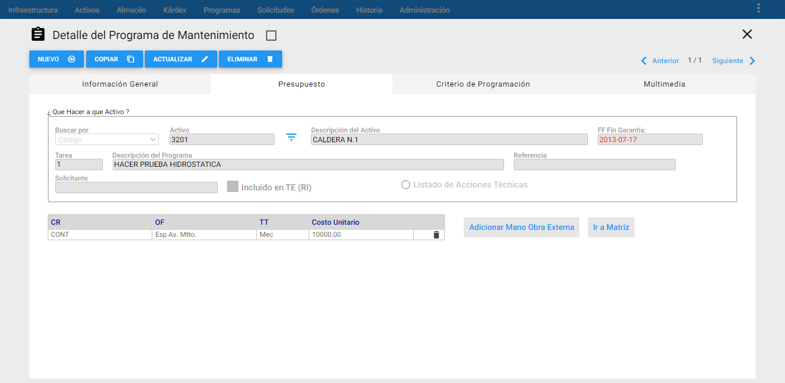
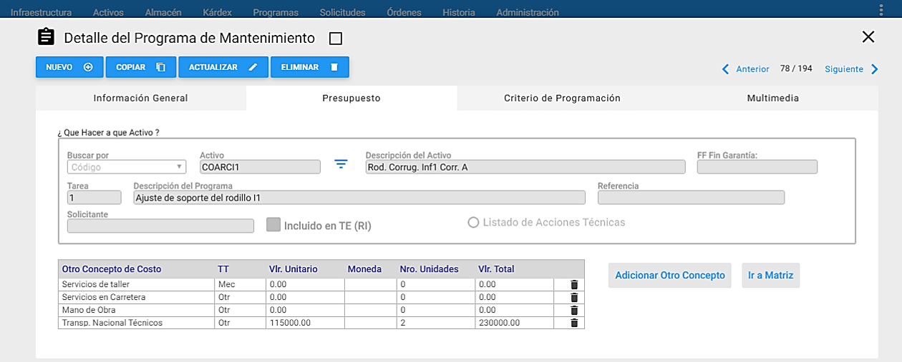
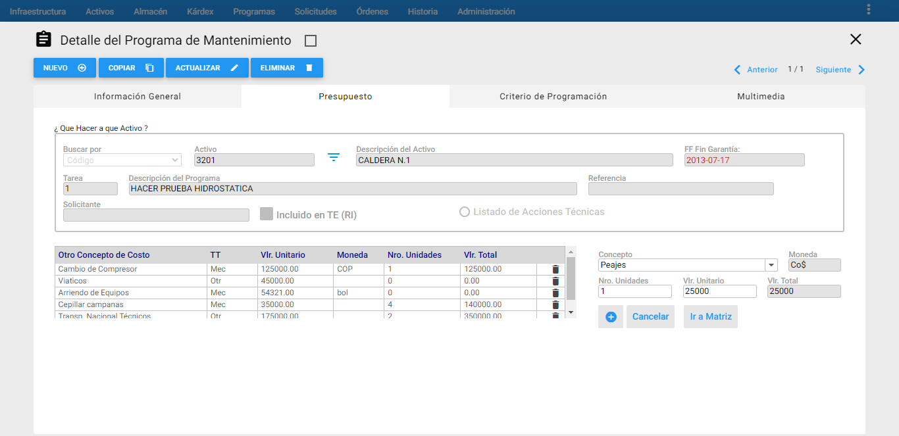
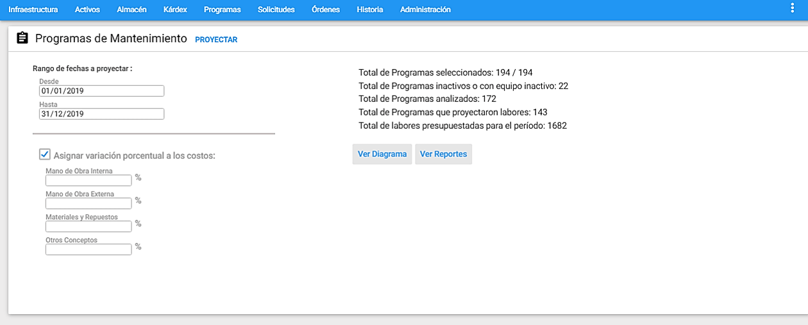
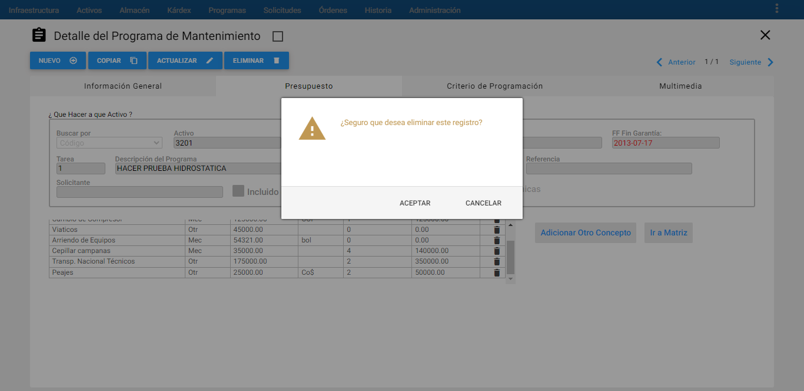
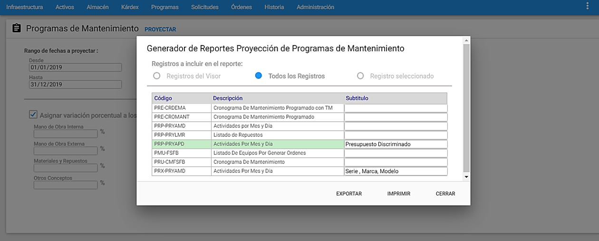
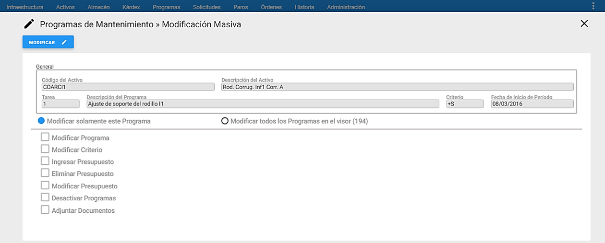

Kárdex de Almacén
Qué es y cuál es el objetivo del Kárdex de Almacén. Sobre qué repuestos actúa. Cómo se define el sistema de costeo y los conceptos de entrada y salida al almacén. Estos tópicos, junto con otros relacionados, conforman el presente capítulo.
Conceptos Básicos sobre el Kárdex de Almacén
El Kárdex de Almacén es el módulo encargado del registro detallado de todo Movimiento de Entrada, Salida y Ajuste, de los almacenes activos en AM** Administrador de Mantenimiento, en la compañía activa.
A través del Kárdex se realiza la actualización del archivo de repuestos, en todo lo concerniente a entradas, salidas y ajustes, manteniendo tal movimiento disponible para consultas o estudios especiales. Su dominio puede ser uno o varios de los Almacenes definidos en la compañía activa.
Una única transacción del Kárdex, mantiene consistencia integral entre tres tablas distintas: Repuestos, Órdenes de Trabajo y Kárdex. Esto significa que una transacción de entrada al almacén, registrada en el Kárdex, actualiza también el saldo en la tabla de repuestos, incrementándolo. Una transacción de salida del almacén, registrada en el Kárdex, actualiza el saldo en la tabla de repuestos, decrementándolo y al tiempo actualiza la tabla de Ordenes de Trabajo, cargando el consumo de tales repuestos.
Es una herramienta práctica cuando no se dispone en la Organización de un Sistema Corporativo de Almacén que administre los Insumos de Mantenimiento, los materiales y los Repuestos. En este caso el Kárdex de AM**, en conjunto con el módulo de Repuestos, pueden suplir tal necesidad e incluso otras alrededor del tema de inventarios, como por ejemplo Administrar el Inventario de Materia prima, de producto en proceso, de material de empaque, de útiles de Oficina y de Aseo y otros.
Pero también es muy útil cuando ya existe un Sistema externo dedicado a la administración del Inventario de Repuestos de la corporación, a través del cual se realiza toda gestión y movimiento de entradas y salidas. En este caso AM** debe enterarse del resultado de cada movimiento ejecutado a través del sistema externo. Para ello tal sistema externo debe poder entregar un archivo a manera de interface, en el que se comunique a AM: los saldos en existencia y el valor unitario vigente de cada repuesto, después de aquellos movimientos.
Es posible definir un gran número de conceptos de entrada y salida de artículos del almacén. Los Conceptos de Entrada son las operaciones por las cuales ingresan los repuestos al Almacén. Se puede registrar un número infinito de conceptos de entrada. Dentro de los conceptos de entrada existen algunos que se encuentran predefinidos. Aún así es posible definir cuantos sean requeridos y definir para cada uno sus requerimientos especiales. Por ejemplo, habrá conceptos de entrada que podrán exigir la información del Almacén desde donde proviene el repuesto, otros en cambio, podrán exigir el número de la Orden de Trabajo, cuando se trate de una entrada por devolución de un repuesto al Almacén, desde una Orden de Trabajo que lo solicitó y no lo utilizó.
Los Conceptos de Salida son las operaciones por las cuales se produce un retiro de los repuestos del Almacén. Se puede registrar un número infinito de conceptos de salida. Dentro de los conceptos de salida existen algunos que se encuentran predefinidos. Aún así, es posible definir cuantos sean requeridos y definir para cada uno sus requerimientos especiales. Por ejemplo habrá conceptos de salida que podrán exigir el número de la Orden de Trabajo cuando se trate de una salida de repuestos hacia esa Orden de Trabajo preexistente en AM Web.
El Kárdex trabaja además en consonancia con el método de valorización de inventarios más adecuado, entre las varias opciones: Promedio Ponderado y Costo del Último Ingreso, que se definen para cada Almacén. En el primer caso el costo unitario del código que
acaba de ingresar se calcula ponderando el número de unidades que ingresan a su respectivo costo unitario, con el número de unidades que existían previamente, a su costo unitario.
En el segundo caso el Costo Unitario del código que ingresa se convierte en el costo unitario de toda la existencia de ese código en el almacén. Este último esquema es valioso en muchos casos, por cuanto los presupuestos de materiales y repuestos pueden ser muy realistas, basados en costos recientes. Se debería usar cuando el Almacén del sistema AM We b no es contable en el sentido estricto de la palabra.
Se ha estructurado el módulo de Kárdex, para establecer su control a un nivel superior: el documento. En un mismo documento, de entradas, se reportan varios movimientos de entrada. De forma igual sucede con un documento de salidas. A partir de esta definición, se registra primero la información del documento, que será general para todos los movimientos asociados al mismo y luego se procede al registro de sus movimientos.
El módulo de Kárdex permite administrar de manera independiente los movimientos de cada uno de los almacenes creados en la Tabla de Almacenes (Infraestructura) y dependiendo del usuario que ingrese al AM tendrá sus propios permisos de administración para cada almacén.
Ventana Principal de Kárdex

Al sobreponer el puntero del mouse en el módulo de Kárdex, se listan los distintos almacenes creados en la tabla de Almacenes de la Infraestructura y cuando se elige un Almacén, el sistema muestra al lado izquierdo un check verde y en frente en azul, el aviso de Seleccionado.

A esta ventana se llega haciendo clic sobre la opción Kárdex del Menú Principal. A través de ella se ejecutan todas las funciones dedicadas a administrar en primer lugar los documentos y luego sus movimientos asociados. A continuación se ilustran las porciones que la componen.
Ventana Visor de Documentos de Kárdex

Desde esta ventana es posible observar los documentos de Kárdex existentes. Se listan todos o una selección o subgrupo de ellos. El conjunto de documentos de Kárdex disponible a ser desplegado se muestra a través de páginas. Es posible configurar el número de registros que se muestran por página desde el menú Administración en la opción “Valores por Defecto” en la pestaña General.
Al hacer clic sobre alguna de las Entradas del Visor el sistema responde mostrando su información en forma detallada, en una ventana llamada Ventana Detalle.
Los títulos en azul que encabezan las columnas son también botones que permiten ordenar la tabla, según el título seleccionado. Para elegir un registro de la tabla se da un clic del mouse sobre él o se desplaza el cursor con las teclas de desplazamiento.
Ventana Detalle de Documento de Kárdex
Al hacer clic sobre alguna de las Entradas del Visor el sistema responde mostrando su información en forma detallada, en una ventana llamada Ventana Detalle.

En la figura anterior se aprecia el conjunto de información que identifica a cada documento, se destaca en la pestaña siguiente, al lado derecho de ella, en azul, el número de registros de movimientos asociados a ese documento.
Al dar clic en la pestaña ** “Movimientos”**, se muestra la ventana Visor de Movimientos de Kárdex, con todos los registros de Movimiento contenidos dentro del Documento actualmente seleccionado, que cumplan con el criterio de subgrupo establecido.
A continuación se detallan los campos que componen el detalle de Documentos de Kárdex:
Almacén: Se muestra el Almacén desde el cual se moverán los repuestos relacionados en el Documento de Kárdex. No es modificable por el usuario.
Movimiento: Se elige tipo de movimiento a realizarse. Se listan tres tipos de movimiento por default: Entrada, Salida y Ajuste.
Tipo de Documento: Se elige el tipo de documento a relacionarse en el Documento. Se listan cuatro tipos de movimiento por default: Factura, Remisión, Salida de Almacén, Devolución al Almacén.
Documento: Se escribe aquí el código que se le asignará al Documento de Kárdex. El código que se le asigne puede ser el mismo número de la factura con la que se adquirieron los repuestos que se están moviendo o puede ser formado con la fecha y el tipo de Movimientos que contiene.
FF Documento: Es la fecha de creación del Documento de Kárdex. Puede ser modificado por el usuario, cuando se encuentre habilitado el valor por defecto “Modificar fecha de documento” de Kárdex en el módulo de Administración / Valores por Defecto / Kárdex. Si el valor por defecto “Modificar fecha del Documento” se encuentra deshabilitado, el campo se muestra bloqueado y no se puede modificar y corresponderá a la fecha del sistema.
OC: Aquí se registra el número de la orden de compra, sí es necesario o es posible diligenciar otro número de documento diferente a la factura o a otro.
% Descuento: Es posible registrar un porcentaje de descuento que aplique a ese Documento. El valor definido en este campo se mostrará automáticamente en el detalle del movimiento.
% IVA: Es posible registrar un porcentaje de IVA que aplique a ese Documento. El valor definido en este campo se mostrará automáticamente en el detalle del movimiento.
Documento Anexo: Se digita un número de documento puede ser el mismo número de la factura con la que se adquirieron los repuestos que se están moviendo o puede ser formado con la fecha y el tipo de Movimientos que contiene, con el fin de realizar consultas futuras.
Tercero / Proveedor: Se especifica un Tercero relacionado con el Documento. Puede ser por ejemplo el Proveedor de los repuestos relacionados en el Documento o la persona que autoriza el movimiento de los Repuestos contendidos en él.
CC: Se especifica el Centro de Costo al cual se van a cargar los costos de los Movimientos relacionados en el Documento.
Sub CC: Este campo siempre está bloqueado y muestra el Código Sub CC asociado al Centro de Costo elegido.
Comentarios: En este campo se pueden agregar observaciones e información complementaria del Documento de Kárdex. Tiene capacidad para soportar hasta 4000 caracteres.
Ventana Movimientos de Kárdex

A esta ventana se llega haciendo clic sobre la pestaña ** “Movimientos”** ubicada al lado derecho de la pestaña principal ** “Documentos”** en Kárdex. A través de ella se ejecutan todas las funciones dedicadas a administrar el Movimiento de entrada, de salida, o de cualquier tipo de ajustes, de los Materiales y Repuestos contenidos en el Almacén o Almacenes de la compañía activa. A continuación se ilustran las porciones que la componen.
Ventana Visor de Movimiento de Kárdex

Desde esta ventana es posible observar los registros de Movimiento de Kárdex para el Documento actualmente seleccionado que cumplen con el criterio de subgrupo actual. En la parte superior del Visor es posible visualizar el tipo de transacción que se realiza en ese Documento.

Al hacer clic sobre los iconos de <span class=”iconify btn” data-icon=alert-circle-outline> admiración circulo</span>, se muestra información adicional. Por ejemplo, al dar clic sobre el icono <span class=”iconify btn” data-icon=alert-circle-outline>admiración circulo</span>, que está al lado derecho del campo Código RP, se observa el histórico de la información de los saldos de inventario de ese movimiento de Repuestos, es decir, los saldos de inventario que tenía ese ítem antes de la transacción, y los saldos de inventario con los que quedó ese ítem, luego de finalizar la transacción, que corresponde al después de la transacción. Si se requiere conocer los datos del durante la transacción, basta con ubicarse en el detalle del movimiento seleccionado y desplazarse con el scroll vertical, para visualizar los datos de ese movimiento de Repuestos.

Por otra parte, al hacer clic sobre el icono <span class=”iconify btn” data-icon=alert-circle-outline>admiración circulo</span>, que está al lado derecho del campo CP, se observa el nombre del concepto de kárdex asociado a ese movimiento de Repuestos.

Al finalizar una transacción de movimiento de Repuestos, todos los registros se observan en color gris y bloqueados, los cuales se convierten en registros de solo consulta. No es posible eliminar los registros de las transacciones de kárdex, una vez han sido ingresadas en el módulo.

Para eliminar un registro de movimiento de Repuestos, solo se permite hacerlo, durante la creación del mismo, para esto se debe movilizar hasta el final del lado derecho usando el scroll vertical, al dar clic al eliminar (basura), sale un mensaje de alerta indicándole al usuario si está seguro de eliminar el registro y finalmente se da clic en Aceptar.

Para crear un nuevo movimiento se da clic en el <span class=”iconify btn” data-icon=filter-variant>icono de filtro</span>, ubicado en la parte superior derecha, seguidamente se abre una nueva ventana con el visor de los Materiales y Repuestos, en donde es posible seleccionar uno o varios. Para seleccionar un solo Material o Repuesto basta con dar doble clic al ítem o seleccionarlo y luego dar clic al botón “Adicionar RP”., mientras que si se desea seleccionar varios ítems se puede realizar a través de la combinación de teclas control+clic en cada uno de los Materiales o Repuestos a ser seleccionados, luego dar clic al botón “Adicionar RP”; de cualquiera de las formas de seleccionar los Materiales y Repuestos, se visualiza todos los ítems de manera independiente en la ventana Detalle del movimiento, con el fin de diligenciar la información del movimiento a cada uno de ellos. Para mayor detalle de la información, dirigirse al capítulo 2.2 Ventana Detalle de este manual.

También, es posible crear movimientos, al hacer clic en el botonMás, ubicado en la parte superior derecha, seguidamente se visualiza que se crea una nueva fila en la última posición de la lista o en la primera posición, en el caso de tratarse del primer registro de movimiento en el documento.

Por otro lado, el botón “Insertar Movimientos se usa para insertar uno o varios registros de movimientos de Materiales o Repuestos, una vez diligenciados todos los campos de la ventana Detalle del movimiento de cada item, se da clic en este botón, con el fin de insertarlos todos juntos en la BD de AM. Además, si se desea se puede usar el botón “Insertar Movimientos para ir insertando el movimiento de un material o Repuesto uno a uno.

Finalmente, el botón de Despachar reservas, ubicado en la parte superior derecha, solo es visible en los documentos de transacción tipo Salidas. Al dar clic a este botón, se abre una nueva ventana que muestra el visor de las Reservas de los Materiales o Repuestos que se han generado, con el objetivo de poder despacharlas a través de esta nueva funcionalidad.

Para continuar con el proceso de despacho de reservas de Materiales o Repuestos, se debe elegir de la ventana mostrada anteriormente, la reserva a despachar dando doble clic directamente al registro o seleccionar el registro y luego dar clic al botón Despachar RV.

Inmediatamente, se observa que esta ventana se cierra y en el visor de movimientos de kárdex se muestra el ítem seleccionado, para proceder a diligenciar la información del movimiento de salida, en el campo Cantidad se registra el número de unidades reales a despachar. Si la reserva tiene asociada una OT, esta OT se asocia al movimiento de Kárdex y en la matriz de Gasto Real de Materiales y Repuestos de la OT se agrega un registro por la cantidad despachada del Repuesto.
Si se requiere Cancelar reservas, se debe hacer desde el módulo de Almacén de Repuestos a través de la transacción “Reservas”. Para mayor detalle, consultar la funcionalidad en el módulo de Almacén de Repuestos en la transacción de Reservas.
Ventana Detalle

La ventana Detalle se encuentra ubicada en la pestaña Movimientos, a esta ventana se llega, al dar clic en dicha pestaña. En esta ventana se encuentra toda la información relevante al registro de movimiento de Repuestos. A continuación se describen los campos que componen el registro. Sobre cada campo se da una breve explicación.
Código RP: Especifica el Código o Referencia del material o repuesto que fue objeto del movimiento de entrada o salida, según se elija en la ventana visor de Materiales y Repuestos, que se muestra al dar clic en el <span class=”iconify btn” data-icon=filter-variant>icono de filtro</span> ubicado en la parte superior derecha. Es posible escribir directamente el Código o Referencia del Repuesto exacta en el campo Código RP, al finalizar de escribir el Código o Referencia, se presiona la tecla tabular.
Al terminar de digitar o elegir el Repuesto, se muestra información automática del Repuesto de los siguientes campos:
Descripción RP, $ Unit y Unit $ del AL. También, al dar clic sobre el icono de <span class=”iconify btn” data-icon=alert-circle-outline>admiración circulo</span> aparece un cuadro llamado ** “Antes de la transacción”**, está al lado derecho de este campo y muestra la información del saldo de inventario actual de ese ítem antes de la transacción, una vez se finaliza la transacción del movimiento, se muestra un cuadro adicional llamado “Después de la transacción” y muestra la información del saldo de inventario actual con la que quedó el ítem, luego de finalizarse la transacción.
La información contenida en el cuadro ** “Antes de la Transacción”** es la siguiente:
Cantidad Actual: Muestra la cantidad actual en existencia en el almacén, del repuesto o material, antes del movimiento que se va a registrar. Es un campo que solo despliega datos.
Cantidad Disponible: Muestra la cantidad disponible en el almacén, del repuesto o material para su consumo, antes del movimiento que se va a registrar. Es un campo que solo despliega datos.
Costo Unitario: Muestra el valor unitario actual del repuesto o material, antes del movimiento que se va a registrar. Es un campo que solo despliega datos.
La información contenida en el cuadro “Después de la Transacción” es la siguiente:
Cantidad Actual: Muestra la cantidad actual en existencia en el almacén, del repuesto o materia, después del movimiento registrado. Es un campo que solo despliega datos.
Cantidad Disponible: Muestra la cantidad disponible en el almacén, del repuesto o material para su consumo, después del movimiento registrado. Es un campo que solo despliega datos.
Costo Unitario: Muestra el valor unitario actual del repuesto o material, después del movimiento registrado. Es un campo que solo despliega datos.
Descripción RP: Especifica la descripción del material o repuesto que fue objeto del movimiento de entrada o salida. Es un campo que solo despliega datos y no es modificable por el usuario, por ello se observa bloqueado.
CP: Especifica el código del concepto de kárdex seleccionado. Al dar clic en el campo, se muestra la lista en la que se debe elegir el concepto de kárdex por el cual se realiza el movimiento. La lista se crea de acuerdo al tipo de conceptos que contiene el documento. Ej. Sí el tipo de conceptos que contiene el documento es de salida, los conceptos que se muestran en la lista son de salida. Los conceptos se definen en la tabla de Conceptos de Kárdex en el módulo de Infraestructura. También, al hacer clic sobre el icono de <span class=”iconify btn” data-icon=alert-circle-outline>admiración circulo</span>, que está al lado derecho de este campo, se observa el nombre del concepto de kárdex asociado a ese movimiento de Repuestos.
FF Transacción: Es el campo en el que se establece la fecha en la que ocurrió el movimiento. El AM Web propone la fecha del día, pero ella puede ser modificada para reflejar la fecha real del movimiento. Esta fecha puede ser modificable en el permiso de usuario “Modificar fecha del movimiento en KX” en la definición de “Permisos para ejecución de Procesos” que se otorgan al usuario en el módulo de Administración / Modificar permisos básicos.
Cantidad: Es el campo donde se registra la cantidad del repuesto o material, en las unidades propias del repuesto, que entra o sale del almacén, en la transacción actual.
$ Unit: Muestra automáticamente el valor unitario, del material o repuesto que entra o sale del almacén en la actual transacción, una vez seleccionado. Es un campo que solo despliega datos y es modificable en transacciones de tipo entrada y Ajustes.
% Desc: Se ingresa aquí el porcentaje de descuento que se va a aplicar al valor unitario ($ Unit). También, al registrar el % Descuento desde la pestaña de Documento, se verá reflejado ese valor en este campo, de manera automática. Si no es necesario manejar esta información, no se selecciona la opción de manejo de Descuento y se ingresa solamente el Costo Unitario ($ Unit).
Desc: En este campo el sistema calcula automáticamente el descuento valorizado. Este cálculo se realiza a partir del $ Unit y el % Desc diligenciado. No es un campo modificable por el usuario, por ello se observa bloqueado.
% Iva: Se ingresa aquí el porcentaje de IVA que se va a aplicar al valor unitario ($ Unit). También, al registrar el % IVA desde la pestaña de Documento, se verá reflejado ese valor en este campo, de manera automática. Si no es necesario manejar esta información, no se selecciona la opción de manejo de Descuento y se ingresa solamente el Costo Unitario ($ Unit).
Iva: En este campo el sistema calcula automáticamente el IVA valorizado. Este cálculo se realiza a partir del $ Unit y el % IVA diligenciado. No es un campo modificable por el usuario, por ello se observa bloqueado.
$ Unit Fact: Es el campo donde se expresa el valor unitario facturado, del material o repuesto que entra o sale del almacén en la actual transacción. Se debe tener especial cuidado con el tipo de unidades a las que se refiere el costo unitario, puesto que puede ser diferente la unidad de empaque o de compra, a las unidades de despacho o consumo. No es un campo modificable por el usuario, por ello se observa bloqueado.
$ Unit del AL: Muestra el valor unitario actual del repuesto o material, antes del movimiento que se va a registrar o después del movimiento registrado. Para el cálculo de este valor, se tiene en cuenta el tipo de costeo del almacén. Es un campo que solo despliega datos. No es un campo modificable por el usuario, por ello se observa bloqueado.
$ Total: Es un campo calculado por el sistema y que contiene el valor total de la actual transacción. Es el producto de la Cantidad por el $ Unit Fact. No es un campo modificable por el usuario, por ello se observa bloqueado.
OT: Se trata de un campo que normalmente está bloqueado y que solo aparece cuando se elige un concepto de kárdex que exija una Orden de Trabajo válida (Ver Tabla Conceptos de Kárdex en el Capítulo de Infraestructura). Por ejemplo, una salida del almacén con destino a una Orden de Trabajo; o también una entrada al almacén que corresponda a una devolución de un material o un repuesto que había sido despachado a una OT y no fue consumido por ella. Al dar clic al <span class=”iconify btn” data-icon=filter-variant>icono de filtro</span>, ubicado en la parte superior derecha del campo, se abre una nueva ventana con el visor de las Órdenes de Trabajo, y es posible elegirla desde allí, basta con seleccionar la OT y dar doble clic o seleccionar la OT y luego dar clic al botón Adicionar OT.
Cantidad en OT: En este campo se muestra la cantidad del repuesto o material, en las unidades propias del repuesto, que contiene actualmente la OT relacionada en el Movimiento de Kárdex. Este campo no es modificable por el usuario, por lo tanto se visualiza como bloqueado.
Cambiar Costo: Este check box, si se habilita cambia el valor unitario del ítem en el módulo de Almacén de Repuestos. Si no se habilita el check box, no se modifica el valor unitario del ítem.

Para eliminar un registro de transacción, se ubica el registro a eliminar, para ello se debe movilizar hasta el final del lado derecho usando el scroll vertical, al dar clic al icono de eliminar (basura), sale un mensaje de alerta que indica al usuario si está seguro de eliminar el registro, finalmente se da clic en Aceptar. Solamente es posible eliminar los registros de movimientos, cuando está en modo de inserción.
Ajustar Inventario
La funcionalidad de Ajustar Inventario se lleva a cabo, a través de la ventana Detalle del movimiento de kárdex, además, permite realizar dos tipos de ajustes: en Cantidad y en Valor.
El objetivo de esta funcionalidad es realizar una conciliación entre el Inventario Teórico que lo da el sistema y el Inventario Físico que lo debe realizar un designado para este proceso, ambos inventarios deben coincidir, en caso contrario, se procede a realizar un Ajuste. Para realizar el ajuste se debe crear un Documento de tipo Ajuste y crear movimiento, como se muestra en la siguiente figura.

A continuación se describen los campos que componen el registro de un Ajuste. Sobre cada campo se da una breve explicación.
Código RP: Especifica el Código o Referencia del material o repuesto que fue objeto del movimiento de entrada o salida, según se elija en la ventana visor de Materiales y Repuestos, que se muestra al dar clic en el <span class=”iconify btn” data-icon=filter-variant>icono de filtro</span> ubicado en la parte superior derecha. Es posible escribir directamente el Código o Referencia del Repuesto exacta en el campo Código RP, al finalizar de escribir el Código o Referencia, se presiona la tecla tabular. Al terminar de digitar o elegir el Repuesto, se muestra información automática del Repuesto de los siguientes campos: Descripción RP, $ Unit y $ Unit del AL. También, al dar clic sobre el icono de <span class=”iconify btn” data-icon=alert-circle-outline>admiración circulo</span>, aparece un cuadro llamado ** “Antes de la transacción”**, está al lado derecho de este campo y muestra la información del saldo de inventario actual de ese ítem antes de la transacción, una vez se finaliza la transacción del movimiento, se muestra un cuadro adicional llamado “Después de la transacción” y muestra la información del saldo de inventario actual con la que quedó el ítem, luego de finalizarse la transacción.
La información contenida en el cuadro ** “Antes de la Transacción”** es la siguiente:
Cantidad Actual: Muestra la cantidad actual en existencia en el almacén, del repuesto o material, antes del movimiento que se va a registrar. Es un campo que solo despliega datos.
Cantidad Disponible: Muestra la cantidad disponible en el almacén, del repuesto o material para su consumo, antes del movimiento que se va a registrar. Es un campo que solo despliega datos.
Costo Unitario: Muestra el valor unitario actual del repuesto o material, antes del movimiento que se va a registrar. Es un campo que solo despliega datos.
La información contenida en el cuadro “Después de la Transacción” es la siguiente:
Cantidad Actual: Muestra la cantidad actual en existencia en el almacén, del repuesto o materia, después del movimiento registrado. Es un campo que solo despliega datos.
Cantidad Disponible: Muestra la cantidad disponible en el almacén, del repuesto o material para su consumo, después del movimiento registrado. Es un campo que solo despliega datos.
Costo Unitario: Muestra el valor unitario actual del repuesto o material, después del movimiento registrado. Es un campo que solo despliega datos.
Descripción RP: Especifica la descripción del material o repuesto que fue objeto del movimiento de entrada o salida. Es un campo que solo despliega datos y no es modificable por el usuario, por ello se observa bloqueado.
CP: Especifica el código del concepto de kárdex seleccionado. Al dar clic en el campo, se muestra la lista en la que se debe elegir el concepto de kárdex de Ajuste por el cual se realiza el movimiento. La lista se crea de acuerdo al tipo de conceptos que contiene el documento. Además, al hacer clic sobre el icono de <span class=”iconify btn” data-icon=alert-circle-outline>admiración circulo</span>, que está al lado derecho de este campo, se observa el nombre del concepto de kárdex asociado a ese movimiento de Repuestos. También, si se elige un concepto de kárdex de ajuste tipo cantidad, se desbloquea el campo “Cantidad Ajuste”. Mientras que, si se elige un concepto de kárdex de ajuste tipo valor, se desbloquea el campo “$ Unit Ajuste”.
FF Transacción: Es el campo en el que se establece la fecha en la que ocurrió el movimiento de Ajuste. El AM Web propone la fecha del día, pero ella puede ser modificada para reflejar la fecha real del movimiento. Esta fecha puede ser modificable en el permiso de usuario “Modificar fecha del movimiento en KX” en la definición de “Permisos para ejecución de Procesos” que se otorgan al usuario en el módulo de Administración / Modificar permisos básicos.
Cantidad Ajuste: Muestra automáticamente la cantidad actual del material o repuesto. Es el campo donde se registra la cantidad a ajustar del repuesto o material, en las unidades propias, en la transacción actual. Solo se desbloquea cuando el concepto de kárdex es un Ajuste por Cantidad. Si se registra un valor positivo se realiza un ajuste por encima de la cantidad actual del material o repuesto, en forma de adición. Por ejemplo, si se tiene en la cantidad actual 3 unidades y se ajusta una cantidad de 2 unidades, la cantidad al finalizar la transacción será de 5 unidades. Por otro lado, es posible registrar valores negativos anteponiendo el signo menos (-) antes de digitar la cantidad, entonces se realiza un ajuste por debajo de la cantidad actual del material o repuesto, en forma de sustracción. Por ejemplo, si se tiene en la cantidad actual 3 unidades y se ajusta una cantidad de -2 unidades, la cantidad al finalizar la transacción será de 1 unidad.
$ Unit Ajuste: Muestra automáticamente el valor unitario, del material o repuesto. Es el campo donde se registra el valor unitario a ajustar del repuesto o material, en las unidades propias, en la transacción actual. Solo se desbloquea cuando el concepto de kárdex es un Ajuste por Valor. Si se registra un valor positivo se realiza un ajuste por encima del valor unitario actual del material o repuesto, en forma de adición. Por ejemplo, si se tiene en el valor unitario actual $1000 y se ajusta un valor de $100, el valor unitario del AL, al finalizar la transacción será calculada de acuerdo al tipo de costeo del almacén. Por otro lado, es posible registrar valores negativos anteponiendo el signo menos (-) antes de digitar el valor unitario, entonces se realiza un ajuste por debajo del valor unitario actual del material o repuesto, en forma de sustracción. Por ejemplo, si se tiene en el valor unitario actual $1000 y se ajusta una cantidad de $-100, el valor unitario del AL, al finalizar la transacción será calculada de acuerdo al tipo de costeo del almacén.
Cantidad: *Muestra automáticamente la cantidad actual del material o repuesto antes de la transacción, una vez definida la cantidad de ajuste, se muestra la cantidad total con la que quedará el material o repuesto al finalizar la transacción. Es un campo que solo despliega datos y no es modificable por el usuario, por ello se observa bloqueado.
$ Unit del AL: Muestra el valor unitario actual del repuesto o material, antes del movimiento que se va a registrar o después del movimiento registrado. Para el cálculo de este valor, se tiene en cuenta el tipo de costeo del almacén. Es un campo que solo despliega datos. No es un campo modificable por el usuario, por ello se observa bloqueado.
$ Total: Es un campo calculado por el sistema y que contiene el valor total de la actual transacción. Es el producto de la Cantidad por el $ Unit del AL. No es un campo modificable por el usuario, por ello se observa bloqueado.
OT: Se trata de un campo que normalmente está bloqueado y que solo aparece cuando se elige un concepto de kárdex que exija una Orden de Trabajo válida (Ver Tabla Conceptos de Kárdex en el Capítulo de Infraestructura), para movimientos de entrada o salida. Para el caso de los Ajustes, no se requiere de una OT. Es un campo que solo despliega datos. No es un campo modificable por el usuario, por ello se observa bloqueado.
Cantidad en OT: En este campo se muestra la cantidad del repuesto o material, en las unidades propias del repuesto, que contiene actualmente la OT relacionada en el Movimiento de Kárdex. Para el caso de los Ajustes, no se requiere de una OT. Este campo no es modificable por el usuario, por lo tanto se visualiza como bloqueado.
Congelar Documento

Es una funcionalidad que inhibe la posibilidad de adicionar nuevos movimientos a un Documento. Una vez ejecutada está transacción no tiene reversa y permanecerá en el Kárdex como un Documento únicamente de Consulta.
El botón Congelar Documento se encuentra ubicado en la parte superior izquierda de la ventana y solo aparecerá a los usuarios que tengan el permiso de usuario “Congelar documentos en Kárdex” en la definición de “Permisos para ejecución de Procesos” que se otorgan al usuario en el módulo de Administración / Modificar permisos básicos.

Para congelar un documento basta con seleccionar el Documento de Kárdex, dar clic al botón Congelar Documento, el sistema muestra un mensaje de alerta indicado al usuario de si está seguro de continuar con el proceso, ya que la operación no tiene reversa, para finalizar dar clic en el botón Aceptar.
Ventana Submenú de Kárdex de Almacén
Subgrupo
Se usa para seleccionar grupos de Movimiento de Kárdex que cumplen un conjunto de filtros o criterios. El objetivo para hacerlo es realizar un estudio posterior sobre los registros seleccionados en el subgrupo. Para ingresar a esta opción se debe dar clic al <span class=”iconify btn” data-icon=filter-variant>icono de filtro</span>, ubicado en la parte superior derecha de la ventana Visor de Movimiento de Kárdex

Cada criterio trabaja en conjunto con los demás, con el operador intersección.
Cada criterio aparece inicializado en un valor global que permite mostrar todos los Movimientos de Kárdex registrados en el sistema. Lo que significa que de no escoger un criterio se obtiene como resultado del subgrupo el mismo conjunto completo de todos los Movimientos de Kárdex.
AM mantiene activo cualquier subgrupo en cada módulo, hasta que el usuario lo modifique o restablezca los valores estándar.
El programa permite entonces hacer selección de un grupo de Movimientos de Kárdex de acuerdo con los criterios seleccionados en la siguiente ventana.

Los criterios de selección están divididos en 2 grupos: Los que aplican sobre el Documento de Kárdex y Los que Aplican sobre el Movimiento de Kárdex en sí.
FILTRAR POR CAMPOS PARTICULARES DEL DOCUMENTO
Centro de Costo: Esta selección agrupa todos los Documentos de Kárdex que están asociados con el Centro de Costo que se especifique en el campo. También se puede elegir el Centro de Costo mediante el uso de comodines, para ello, se debe dar clic al icono “Candado”. Si se selecciona la opción “Utilizar comodines”, se digita la palabra, por ejemplo Sistema% seleccionará todos los Documentos de Kárdex en cuyo Centro de Costo empiecen por la palabra Sistema.
Documento: Esta selección agrupa todos los Documentos de Kárdex cuyo documento cumple con el criterio especificado.
Movimiento: Esta selección agrupa todos los Documentos de Kárdex cuyo tipo de movimiento es elegido en la lista desplegable.
Rango de Generación: Esta selección agrupa todos los Documentos de Kárdex cuya fecha de Generación se encuentra en el rango de Fechas especificado en el criterio.
Tercero / Proveedor: Esta selección agrupa todos los Documentos de Kárdex que están asociados al tercero que se especifique en el campo. También se puede elegir el Tercero / Proveedor mediante el uso de comodines, para ello, se debe dar clic al icono Candado. Si se selecciona la opción “Utilizar comodines”, se digita la palabra, por ejemplo FER% seleccionará todos los Documentos de Kárdex en cuyo Tercero / Proveedor empiecen por la palabra FER.
Tipo de Documento: Esta selección agrupa todos los Documentos de Kárdex cuyo tipo de documento es elegido en la lista desplegable.
FILTRAR POR CAMPOS DEL MOVIMIENTO
Casilla: Esta selección agrupa todo el movimiento correspondiente al repuesto de la casilla (Sitio de almacenamiento en el almacén) seleccionado.
Clase del Repuesto: Esta selección agrupa todo el movimiento correspondiente al repuesto de la clase especificada.
Código de Barras Interno: Si existe un código de barras interno de la organización, este campo permite seleccionar el Repuesto que se encuentre asociado al Código de Barras Interno que se ingresó al crear el Repuesto.
Código de Barras Proveedor: Permite seleccionar el Repuesto que se encuentre asociado al Código de Barras del Proveedor que se ingresó al crear el Repuesto.
Comentarios: Esta selección se agrupa todo el movimiento cuyo campo comentarios corresponde con el texto especificado.
Código del Pedido:Esta selección agrupa todo el movimiento originado a partir del módulo de Pedidos.
Código del Repuesto: Esta selección agrupa todo el movimiento correspondiente al repuesto del código especificado.
Concepto: Esta selección agrupa todo el movimiento correspondiente al concepto de movimiento seleccionado.
Descripción del Repuesto: Esta selección agrupa todo el movimiento correspondiente al repuesto de la descripción especificada.
Número de la OT: Permite buscar una orden de trabajo específica por medio del número que ésta fue asociada.
Rango de Generación del Movimiento: Esta selección agrupa todo el movimiento en fechas incluidas dentro del rango de fechas seleccionado.
Referencia Principal: Esta selección agrupa todo el movimiento correspondiente al repuesto de la referencia seleccionada (Proveedor 1).
Tipo de Repuesto: Esta opción permite seleccionar los Repuestos por su característica de “Inventariado” o “No Inventariado”.
Transacciones
Exportar
Esta opción permite la exportación de los Documentos de Kárdex que aparecen en el visor, totales o provenientes de un subgrupo, a un archivo de Excel que se descarga automáticamente en la estación cliente donde se ejecutó el proceso.
Al ejecutar esta transacción, se abrirá una ventana la cual se muestra a continuación.

Al darle clic en el botón Exportar., se generará un archivo de Excel que se descarga automáticamente en la estación cliente donde se ejecutó el proceso, el objetivo de esta exportación es llevar toda la información de los Documentos de Kárdex contenidos en el visor a un archivo plano, para luego ser analizados.
Adicionalmente, es posible exportar todos los campos de la ventana Detalle de los Documentos de Kárdex, para esto se da clic en el cuadro llamado ** “Exportar todas las Columnas”**. También, es posible exportar uno o varios campos de la ventana Detalle de los Documentos de Kárdex, para esto se da clic en cada uno de los cuadros que acompañan los campos.
Servicios
Reportes
Este comando permite visualizar los reportes relacionados con los Documentos y Movimientos de Kárdex. Existen los siguientes tipos de reportes básicos disponibles:

Los anteriores reportes pueden ser seleccionados para uno o varios Documentos de Kárdex:
Todos los Registros: Con esta opción se imprimen todos los reportes de los Activos / Equipos existentes en la base de datos, sin importar si se ha realizado un subgrupo.
Registros del Visor: Esta opción permite hacer una impresión de todos los Activos / Equipos que están seleccionados en la Ventana Visor, es decir los registros que están seleccionados en el subgrupo actual.
Registro Seleccionado: Esta opción permite hacer una impresión del Activo / Equipo que esta seleccionado en la Ventana Visor (el cursor verde se encuentra sobre él).
Subtítulo: En este campo es posible registrar un poco menos de una línea de información, tipo documentación del Reporte, para que se imprima bajo el área de títulos estándar.
Para visualizar los reportes, se selecciona el reporte y luego se da clic al botón Imprimir.